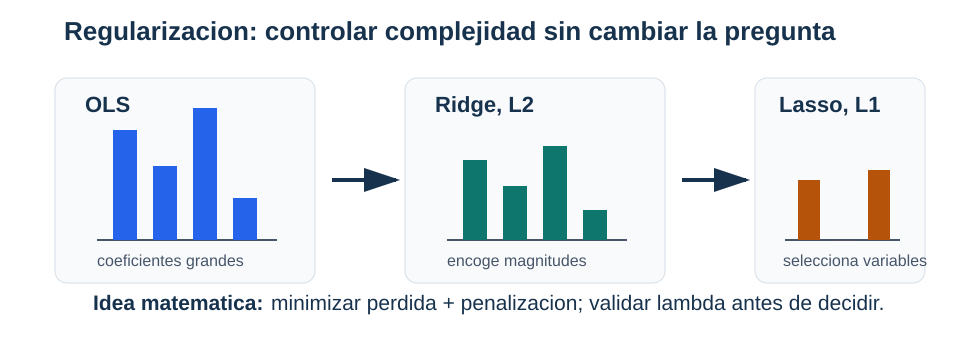

Validación y regularización
Cómo escoger complejidad sin confundir ajuste con generalización
La variable x1 del conjunto sintético produjo una recta con MSE cercano a 2. Podemos construir una familia mucho más flexible sin añadir nuevas mediciones:
\[ \boldsymbol\phi_d(x) =\begin{bmatrix}x&x^2&\cdots&x^d\end{bmatrix}^{\!\top}. \]
Dividamos las 160 filas, con semillas fijadas, en 80 para entrenamiento, 40 para validación y 40 para prueba. Ajustar polinomios por mínimos cuadrados produce:
| grado | MSE entrenamiento | MSE validación |
|---|---|---|
| 1 | 1.993 | 2.223 |
| 3 | 1.965 | 2.172 |
| 8 | 1.749 | 2.379 |
| 15 | 1.542 | 3.254 |
El grado 15 resuelve mejor el problema que se le pidió durante el ajuste: tiene el menor error de entrenamiento. También produce el peor resultado en las 40 observaciones que no utilizó. La optimización no falló. El criterio de selección era incompleto.
Capacidad y comportamiento fuera de muestra
Una regresión polinomial sigue siendo lineal en sus parámetros:
\[ f_{\boldsymbol\theta}(x) =\theta_0+\theta_1x+\cdots+\theta_dx^d. \]
Al aumentar \(d\), la familia contiene a las anteriores y el mínimo de la pérdida de entrenamiento no puede aumentar, salvo diferencias numéricas. Esa propiedad no se extiende al riesgo poblacional. Los parámetros de orden alto pueden adaptarse a fluctuaciones particulares de la muestra.
def polynomial_features_1d(x, degree):
x = np.asarray(x, dtype=float).reshape(-1, 1)
columns = [np.ones((x.shape[0], 1))]
columns.extend(x ** power for power in range(1, degree + 1))
return np.hstack(columns)La transformación \(x\mapsto(x,x^2,\ldots,x^d)\) es determinista por fila. No consulta otras observaciones. El grado, en cambio, define una familia y debe elegirse sin utilizar la evaluación final.
Si \(D_n\) representa la muestra de ajuste y \(\widehat f_{D_n}\) la función obtenida, repetir el muestreo produce otra función. Para pérdida cuadrática y una entrada fija \(\boldsymbol x\), bajo condiciones usuales,
\[ \begin{aligned} \mathbb E_{D_n,Y\mid\boldsymbol x} [(Y-\widehat f_{D_n}(\boldsymbol x))^2] ={}&\operatorname{Var}(Y\mid\boldsymbol X=\boldsymbol x)\\ &+\operatorname{Bias}(\boldsymbol x)^2\\ &+\operatorname{Var}_{D_n} (\widehat f_{D_n}(\boldsymbol x)), \end{aligned} \]
donde
\[ \operatorname{Bias}(\boldsymbol x) =\mathbb E_{D_n}[\widehat f_{D_n}(\boldsymbol x)] -\mathbb E[Y\mid\boldsymbol X=\boldsymbol x]. \]
Una familia demasiado rígida puede tener sesgo alto. Una familia muy flexible puede responder con intensidad a las particularidades de \(D_n\). La regularización modifica este balance; la validación proporciona datos para compararlo.

Una curva de aprendizaje es un diagnóstico, no una prueba automática de una causa. Una brecha puede sugerir sensibilidad a la muestra; errores altos en ambos conjuntos pueden sugerir una familia inadecuada, una representación pobre o una optimización incompleta.
Tres funciones para tres conjuntos de datos
Entrenamiento, validación y prueba no son tres nombres para muestras intercambiables.
| conjunto | decisiones que permite |
|---|---|
| entrenamiento | ajustar parámetros y transformaciones aprendidas |
| validación | escoger grado, penalización y otras configuraciones |
| prueba | evaluar una vez el procedimiento ya fijado |
Validación de una regla fijada. Sea \(f\) una función que no utilizó el conjunto de validación. Si \(Z_1^{\mathrm{val}},\ldots,Z_v^{\mathrm{val}}\) son iid de la población \(P\), entonces
\[ \mathbb E[\widehat R_{\mathrm{val}}(f)\mid f] =R_P(f), \]
si la pérdida es integrable.
Condicionado en \(f\), cada pérdida \(\ell(f;Z_i^{\mathrm{val}})\) tiene esperanza \(R_P(f)\). La linealidad de la esperanza aplicada al promedio da la igualdad.
Después de comparar muchos modelos y escoger el menor valor observado en esa misma validación, la función elegida ya depende de los datos de validación. El mínimo incorpora optimismo por selección. El conjunto de prueba se reserva para el procedimiento completo: transformaciones, familia, hiperparámetros, umbral y regla de entrenamiento.
Cuando hay pocas observaciones, la validación cruzada reutiliza de manera estructurada distintas partes de los datos para comparar configuraciones. No elimina la incertidumbre ni autoriza usar prueba durante el diseño. El capítulo de estrategia estudiará sus estimaciones con más detalle.
Transformaciones y filtración de información
Una transformación puede ser fija o aprender cantidades de los datos.
- \(x\mapsto x^2\) se aplica a una fila sin estimar nada de las demás.
- La estandarización necesita medias y desviaciones.
- La imputación necesita reglas o valores de reemplazo.
- Una codificación puede aprender qué categorías existen.
- La selección de variables utiliza una medida calculada con respuestas.
Las cantidades aprendidas se ajustan solo con entrenamiento y se aplican sin reestimarlas a validación y prueba. De lo contrario, información reservada cambia la representación usada para entrenar.
Dos filtraciones diferentes. Calcular la media de estandarización con toda la tabla filtra información entre observaciones. Incluir una variable registrada después del resultado filtra información temporal. Una tubería de software ayuda con la primera; la segunda exige comprender cómo se produce cada columna.
Una implementación con scikit-learn mantiene juntos transformación y ajuste:
from sklearn.linear_model import Ridge
from sklearn.pipeline import make_pipeline
from sklearn.preprocessing import PolynomialFeatures, StandardScaler
model = make_pipeline(
PolynomialFeatures(degree=3, include_bias=False),
StandardScaler(),
Ridge(alpha=1.0, fit_intercept=True),
)
model.fit(X_train, y_train)
validation_prediction = model.predict(X_validation)El método fit de la tubería aprende polinomio, escalas y regresión únicamente a partir de entrenamiento. predict reutiliza esos objetos.
Ridge: encoger direcciones inestables
Ridge añade una penalización cuadrática a la pérdida. Con el intercepto en la primera columna de \(\mathbf X\), definimos
\[ \mathbf D=\operatorname{diag}(0,1,\ldots,1) \]
y
\[ J_{\mathrm{Ridge}}(\boldsymbol\theta) =\frac1{2n} \lVert\mathbf X\boldsymbol\theta-\mathbf y\rVert_2^2 +\frac\lambda2\boldsymbol\theta^\top \mathbf D\boldsymbol\theta. \]
El cero inicial evita penalizar el intercepto. El gradiente es
\[ \nabla J_{\mathrm{Ridge}}(\boldsymbol\theta) =\frac1n\mathbf X^\top (\mathbf X\boldsymbol\theta-\mathbf y) +\lambda\mathbf D\boldsymbol\theta. \]
Igualarlo a cero produce
\[ (\mathbf X^\top\mathbf X+n\lambda\mathbf D) \widehat{\boldsymbol\theta}_{\lambda} =\mathbf X^\top\mathbf y. \]
def ridge_closed_form(X, y, lam):
n, p = X.shape
penalty = np.eye(p)
penalty[0, 0] = 0.0
system = X.T @ X + n * lam * penalty
return np.linalg.solve(system, X.T @ y)Esta función implementa la convención del libro. sklearn.linear_model.Ridge minimiza
\[ \lVert\mathbf y-\mathbf X\mathbf w\rVert_2^2 +\alpha\lVert\mathbf w\rVert_2^2. \]
Por tanto, para el mismo diseño y sin penalizar el intercepto, \(\alpha=n\lambda\). Usar el mismo número para alpha y \(\lambda\) sin considerar la normalización no reproduce el mismo problema.
Qué ocurre en las direcciones singulares
Para estudiar los coeficientes no intercepto, supongamos que las características están centradas y escribamos \(\mathbf X=\mathbf U\boldsymbol\Sigma\mathbf V^\top\). Ridge actúa como
\[ \widehat{\boldsymbol\theta}_{\lambda} =\mathbf V (\boldsymbol\Sigma^\top\boldsymbol\Sigma+n\lambda\mathbf I)^{-1} \boldsymbol\Sigma^\top\mathbf U^\top\mathbf y. \]
En la dirección derecha \(\boldsymbol v_j\), el factor
\[ \frac{\sigma_j}{\sigma_j^2+n\lambda} \]
reemplaza el factor \(1/\sigma_j\) de mínimos cuadrados. Las direcciones con \(\sigma_j\) pequeño, que son las más sensibles, se encogen con mayor intensidad. La estabilidad se obtiene a cambio de sesgo.

Un \(\lambda\) positivo no garantiza menor riesgo. Si es demasiado grande, las predicciones se acercan a una regla casi constante y pueden perder estructura real. Su valor se selecciona con validación.
Lasso: una penalización con esquina
Lasso utiliza
\[ J_{\mathrm{Lasso}}(\boldsymbol\theta) =\frac1{2n} \lVert\mathbf X\boldsymbol\theta-\mathbf y\rVert_2^2 +\lambda\sum_{j=1}^{p-1}|\theta_j|. \]
De nuevo, el intercepto no se penaliza. La función \(|t|\) no es diferenciable en cero; su subdiferencial es
\[ \partial|t|= \begin{cases} \{1\}, & t>0,\\ [-1,1], & t=0,\\ \{-1\}, & t<0. \end{cases} \]
Sea \(\mathbf x_j\) la columna \(j\) del diseño. Una solución satisface
\[ 0\in \frac1n\mathbf x_j^\top (\mathbf X\widehat{\boldsymbol\theta}-\mathbf y) +\lambda\,\partial|\widehat\theta_j|. \]
La coordenada puede quedar exactamente en cero cuando
\[ \left| \frac1n\mathbf x_j^\top (\mathbf y-\mathbf X\widehat{\boldsymbol\theta}) \right|\leq\lambda. \]
La esquina de la penalización permite que un intervalo de gradientes residuales sea compatible con cero. El operador de umbral suave
\[ S(a,\lambda) =\operatorname{sign}(a)\max\{|a|-\lambda,0\} \]
aparece al resolver una coordenada a la vez. Si \(\mathbf r_{-j}=\mathbf y-\sum_{k\ne j}\mathbf x_k\theta_k\), la actualización es
\[ \theta_j\leftarrow \frac{S(\mathbf x_j^\top\mathbf r_{-j}/n,\lambda)} {\lVert\mathbf x_j\rVert_2^2/n}. \]
Con variables muy correlacionadas, Lasso puede escoger una y dejar otra en cero de manera sensible a la muestra. Un cero describe la solución penalizada para ese diseño y ese \(\lambda\); no demuestra irrelevancia causal ni ausencia de asociación poblacional.
| aspecto | Ridge | Lasso |
|---|---|---|
| penalización | suma de cuadrados | suma de valores absolutos |
| efecto habitual | encogimiento continuo | algunos ceros exactos |
| columnas correlacionadas | tiende a repartir peso | puede escoger una |
| cálculo | sistema lineal | algoritmo iterativo, por ejemplo coordenadas |
| propósito frecuente | estabilidad predictiva | esparsidad y predicción |
Como ambas penalizaciones actúan sobre coeficientes, las características deben tener escalas comparables. El intercepto se mantiene separado de la estandarización y de la penalización.
Seleccionar sin consultar prueba
Volvamos al polinomio de grado 15. Después de ajustar PolynomialFeatures y StandardScaler con entrenamiento, obtenemos:
alpha de Ridge |
MSE entrenamiento | MSE validación |
|---|---|---|
| 0 | 1.542 | 3.254 |
| 0.0001 | 1.655 | 2.552 |
| 0.01 | 1.756 | 2.317 |
| 0.1 | 1.790 | 2.274 |
| 1 | 1.848 | 2.199 |
| 10 | 1.953 | 2.326 |
| 100 | 2.647 | 3.396 |
Ridge reduce la brecha del polinomio de grado 15. Sin embargo, el polinomio de grado 3 obtiene MSE de validación 2.172 y resulta ligeramente mejor entre las configuraciones comparadas. Se fija entonces el procedimiento de grado 3 y se consulta prueba por primera vez: su MSE es 2.103. La regla de referencia, cuya media se calculó solo con entrenamiento, obtiene 5.533.
Esta evaluación no prueba que el grado 3 sea óptimo para toda muestra futura. Sí documenta una comparación reproducible en la que la prueba no participó en la selección.
Regreso a las subzonas de Bogotá
En el caso de Bogotá solo hay 32 filas. Una partición de 24 subzonas para ajuste y 8 para evaluación produce una métrica muy sensible a cuáles subzonas quedaron en cada grupo.

Escoger la semilla con menor MAE sería otra forma de usar la evaluación para diseñar el resultado. Una comparación responsable fija el mecanismo de partición antes de ver las métricas y muestra su variación. Con tan pocas unidades, la validación cruzada puede aprovechar mejor las filas, pero las unidades siguen siendo agregadas y no están documentadas como una muestra aleatoria de una población más amplia.
Ridge puede estabilizar los coeficientes correlacionados de área, alcobas, baños y parqueaderos. Esa estabilidad resuelve una dificultad del ajuste; no recupera la variación dentro de cada subzona ni la unidad ausente de precio_reportado.
Síntesis
Una familia más flexible siempre puede mejorar o conservar el mejor ajuste de entrenamiento. El ejemplo polinomial muestra por qué ese orden no determina el comportamiento fuera de muestra. Entrenamiento ajusta parámetros y transformaciones; validación compara configuraciones; prueba evalúa el procedimiento fijado.
Ridge añade una penalización cuadrática que encoge especialmente las direcciones mal determinadas. Lasso utiliza valores absolutos y puede producir ceros por su condición de subgradiente. En ambos casos, el intercepto no se penaliza y las características se estandarizan con estadísticas aprendidas solo en entrenamiento.
Regularizar, validar y evitar filtración son partes del mismo procedimiento. Una buena métrica de prueba no borra, sin embargo, las restricciones de unidad, muestreo y medición establecidas antes del ajuste.
Problemas
1. Complejidad que mejora el objetivo equivocado
Use x1 y target de regresion_lineal_sintetica.csv con las particiones descritas al inicio.
- Reproduzca la tabla para grados 1, 3, 8 y 15.
- Grafique cada polinomio dentro y fuera del rango central de entrenamiento.
- Compare normas de coeficientes y números de condición.
- Explique por qué el error de entrenamiento debe ser no creciente si los espacios polinomiales están anidados y la solución es exacta.
- Seleccione un grado con validación y consulte prueba una sola vez.
2. Una tubería con y sin filtración
Construya una variable con faltantes y una categoría poco frecuente.
- Divida los datos antes de imputar, codificar o estandarizar.
- Implemente una tubería que aprenda todas esas transformaciones con entrenamiento.
- Implemente deliberadamente una versión que las aprenda con toda la tabla.
- Compare los objetos aprendidos, no solo la métrica final.
- Identifique cuál información reservada ingresó en cada transformación y por qué una diferencia pequeña en la métrica no vuelve correcto el procedimiento.
3. Ridge en una dirección casi redundante
Use el conjunto sintético y añada x4 = x1 + 0.001*ruido, con semilla fija.
- Estandarice las características usando solo entrenamiento.
- Compare valores singulares y coeficientes de OLS con los de Ridge para una rejilla de \(\lambda\).
- Verifique la fórmula \(\sigma_j/(\sigma_j^2+n\lambda)\) en las direcciones singulares.
- Compare pérdida de entrenamiento, validación y norma de coeficientes.
- Explique qué estabilidad se ganó y qué sesgo se introdujo.
4. Lasso y columnas correlacionadas
Genere dos predictores altamente correlacionados y una respuesta que dependa de ambos.
- Ajuste Lasso para una secuencia de penalizaciones.
- Verifique la condición de subgradiente en una coordenada igual a cero.
- Repita el experimento con diez semillas y registre cuál variable queda activa.
- Compare predicciones y selección de columnas entre repeticiones.
- Redacte una conclusión que distinga esparsidad computada, estabilidad y relevancia sustantiva.
5. Validación con 32 subzonas
Use el caso de Bogotá.
- Defina una tubería con estandarización y Ridge.
- Compare una rejilla de penalizaciones mediante particiones fijadas o validación cruzada.
- Incluya la regla de referencia en cada división y conserve resultados por subzona.
- Muestre la distribución de métricas y la estabilidad de coeficientes.
- Escriba qué conclusión permiten esas 32 filas y qué población adicional no puede afirmarse sin un diseño de muestreo.
Respuestas seleccionadas
Problema 1. Los MSE de validación para grados 1, 3, 8 y 15 son aproximadamente 2.223, 2.172, 2.379 y 3.254. El mínimo de entrenamiento del grado 15 no justifica escogerlo: la configuración se elige con observaciones que no intervinieron en sus coeficientes.
Problema 3. Si una dirección tiene \(\sigma_j\) pequeño, OLS multiplica la componente correspondiente de \(\mathbf U^\top\mathbf y\) por \(1/\sigma_j\). Ridge la multiplica por \(\sigma_j/(\sigma_j^2+n\lambda)\), que permanece acotado y tiende a cero cuando \(\lambda\) crece.